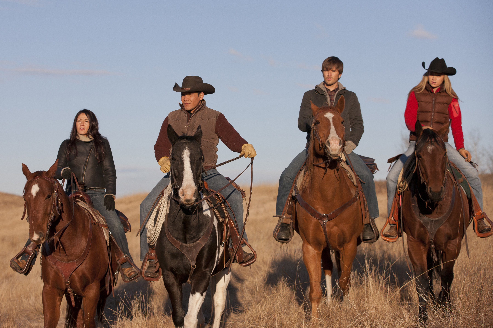

Filmación en Canadá
La serie se filma en Alberta, con paisajes reales que le dan autenticidad.
Ver másLa serie se filma en Alberta, con paisajes reales que le dan autenticidad.
Ver másHeartland está inspirada en una saga de novelas juveniles escritas por Lauren Brooke.
Ver másLos caballos usados en la serie reciben entrenamiento especial para cada escena.
Ver más